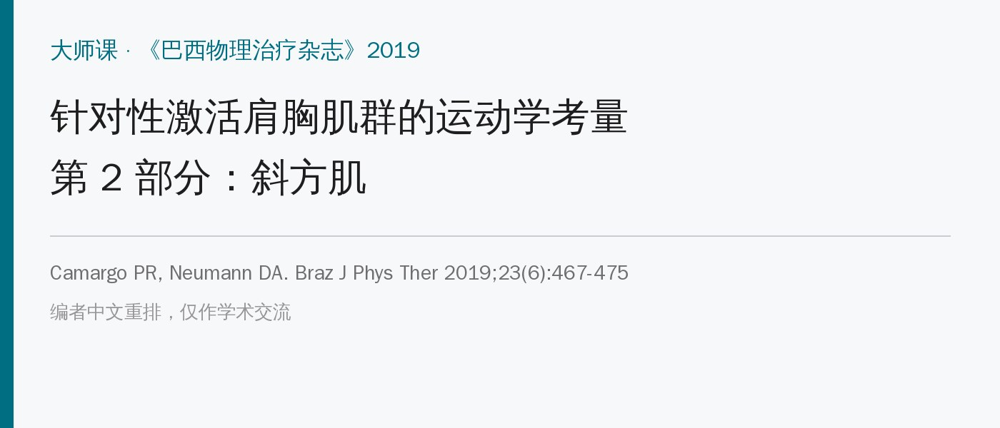
🔖原文信息（编者中文重排）
📚 文献信息
▪ Camargo PR, Neumann DA. Kinesiologic considerations for targeting activation of scapulothoracic muscles – part 2: trapezius. Braz J Phys Ther. 2019;23(6):467-475. doi:10.1016/j.bjpt.2019.01.011
▪ 作者为巴西圣卡洛斯联邦大学肩关节实验室的 Camargo 和《肌肉骨骼系统运动学》作者 Neumann
▪ 文章类型：大师课（叙述性综述），是第 1 部分（前锯肌）的姊妹篇
前锯肌和斜方肌是作用于肩胛骨的主要力偶。斜方肌分上、中、下三部分，纤维方向完全不同，作用也不同。肩痛患者常见的模式是上斜方肌过度激活，中、下斜方肌和前锯肌激活不足或延迟，所以训练时要“分部位”针对。
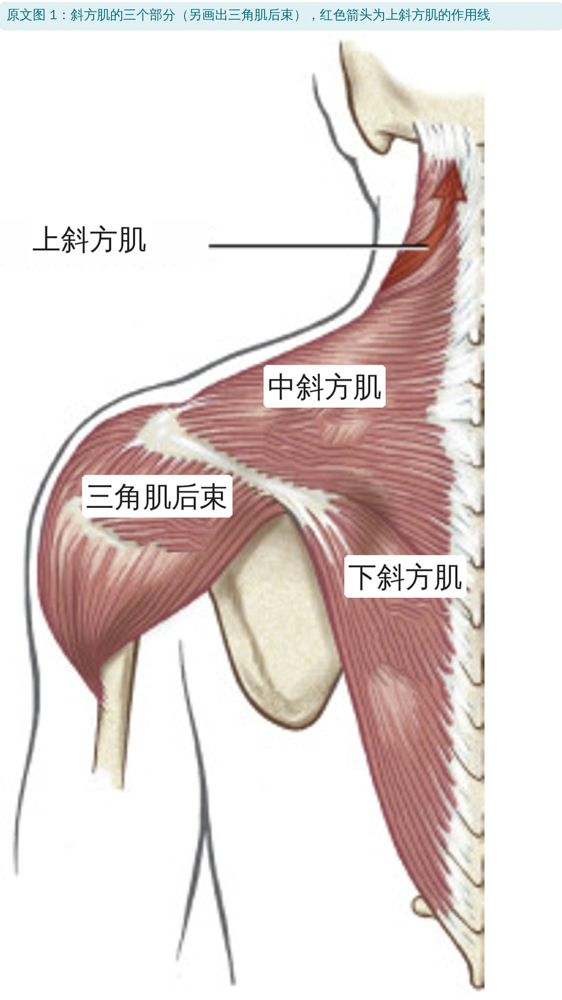
🔖原文图 1：斜方肌的三个部分
• 上斜方肌：起自枕骨、项韧带和最低到 C6 的棘突，几乎垂直下行，止于锁骨外 1/3 后缘
• 中、下斜方肌：起自 C7～T12 棘突；中部水平走行止于肩峰和肩胛冈，下部斜向上止于肩胛冈内侧根部
• 神经：运动由副神经（第Ⅺ对脑神经）支配，感觉来自 C2～C4；副神经走行表浅，损伤后可出现肩下垂（肩胛和锁骨下沉、前伸）和过度下回旋，长期可致盂肱、胸锁关节半脱位
• 作用取决于哪端固定：颈部固定时上斜方肌上提并后缩锁骨；锁骨固定时则伸展、侧屈颈部。中、下斜方肌同理
• 总体上，斜方肌是肩胛的主要稳定肌，前锯肌是主要运动肌，两者有大量重叠
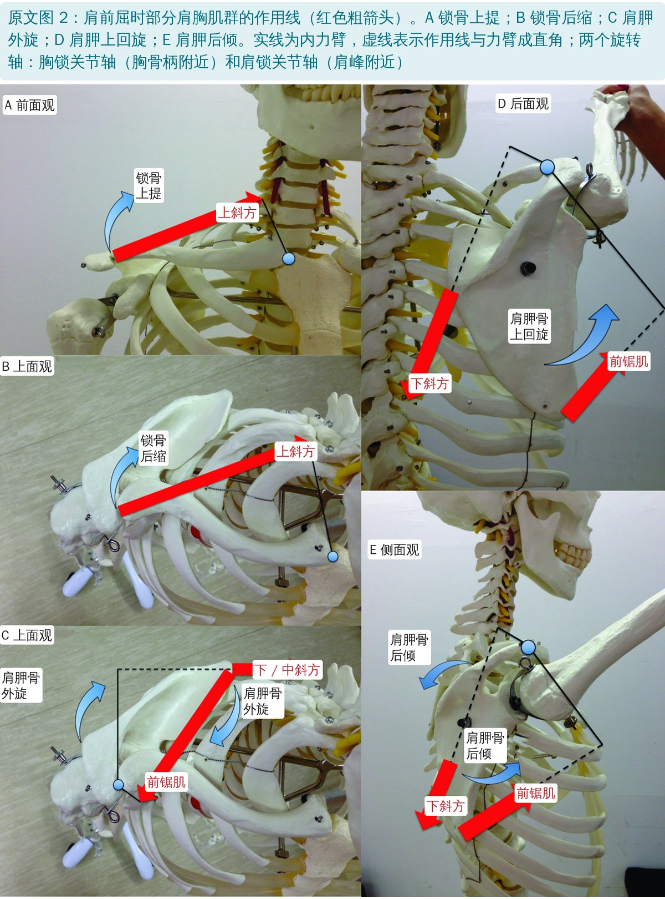
🔖原文图 2：肩前屈时各肌的作用线
• 上回旋最明显，可以摸肩胛下角的移动轨迹来验证
• 内 / 外旋：前屈时通常轻度内旋、末端轻度外旋；靠近额状面的外展通常伴轻度外旋，让关节盂对准外展的肱骨
• 后倾：肩峰向后离开前移的肱骨头，可能增大肩峰下间隙
• 上斜方肌：只止于锁骨，主要通过锁骨起作用，强力上提和后缩锁骨。锁骨上提约贡献肩胛上回旋的 25%，锁骨后缩贡献肩胛外旋的 100%，所以它对上回旋贡献不大，对肩胛外旋贡献大；只有在下斜方肌和前锯肌同时激活时，才间接参与上回旋力偶
• 中、下斜方肌：直接把肩胛往内拉（后缩），并绕肩锁关节使肩胛外旋，用来对抗前锯肌的前伸和内旋
• 下斜方肌与前锯肌是主要的上回旋肌，尤其在外展早、中段；外展时比前屈时更有利
• 后倾主要靠前锯肌，中、下斜方肌只是部分协助
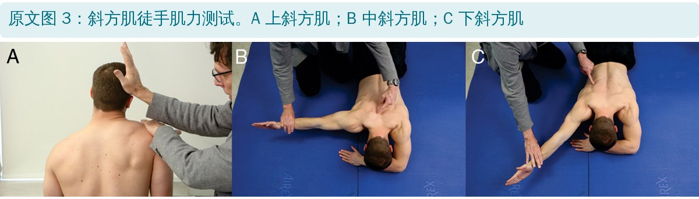
🔖原文图 3：斜方肌徒手肌力测试
• 上斜方肌：头颈稍向同侧侧屈，同时对抗头颈后伸侧屈和肩胛上提；无力时不能把肩峰拉向头部
• 中斜方肌：俯卧，肩外展约 90° 并外旋，对抗水平外展；肩胛内侧缘翘起（过度内旋）提示无力
• 下斜方肌：俯卧，肩外展到与下斜方肌纤维平行（约 120°），保持手臂离床，对抗向下的阻力；肩胛下角离开胸廓提示无力
• 这些测试位置被证明能产生该部分最大的肌电活动
• 还要看控制：让患者双侧在矢状面和额状面做空手和负重上举，观察肩胛运动障碍：内侧缘或下角突出、上举开始时过度耸肩、上举时快速下回旋
• 上斜方肌过度激活 → 锁骨过度上提，伴不希望出现的肩胛前倾
• 下斜方肌激活减少 → 肩胛上回旋不足
• 中斜方肌激活延迟 → 肩胛过度内旋、内侧稳定不足
• 但肩胛运动障碍是肩痛的原因还是结果，目前并不清楚；疼痛、软组织紧张（后关节囊、胸小肌）、肌力或激活失衡、疲劳、驼背都可能参与
很多肩痛患者其实不是“没力气”，而是耐力、控制或激活时机有问题。所以首选低到中等阻力、多次重复，配合治疗师的口令和反馈，重在动作质量；确实有明显无力时才需要大负荷。原则是：少用上斜方肌，多用中、下斜方肌和前锯肌。
| 训练动作 | 针对部位 |
|---|---|
| 耸肩加后缩（图 4） | 上斜方肌 |
| 过头耸肩（图 5） | 上斜方肌 |
| 俯卧水平外展（图 6） | 中斜方肌 |
| 过头后缩（图 7） | 中斜方肌 |
| 俯卧肩胛定位（图 8） | 下斜方肌 |
| 外旋位上举（图 9） | 下、中斜方肌 |
| 俯卧后伸（图 10） | 下、中斜方肌 |
| 侧卧外旋（图 11） | 下、中斜方肌 |
| 侧卧前屈（图 12） | 下、中斜方肌 |
| 俯卧 I、T、Y（图 13） | 下、中斜方肌 |
原文表 1：针对斜方肌的训练动作（中文翻译）
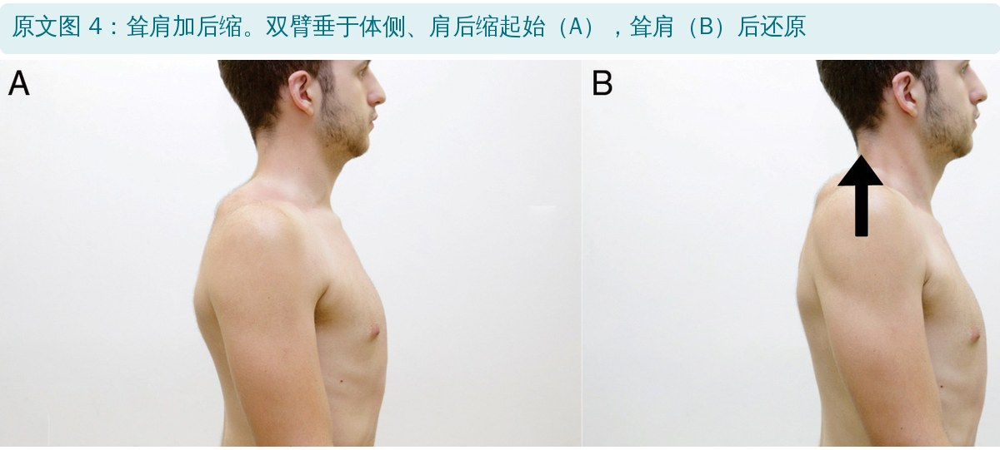
🔖原文图 4：耸肩加后缩
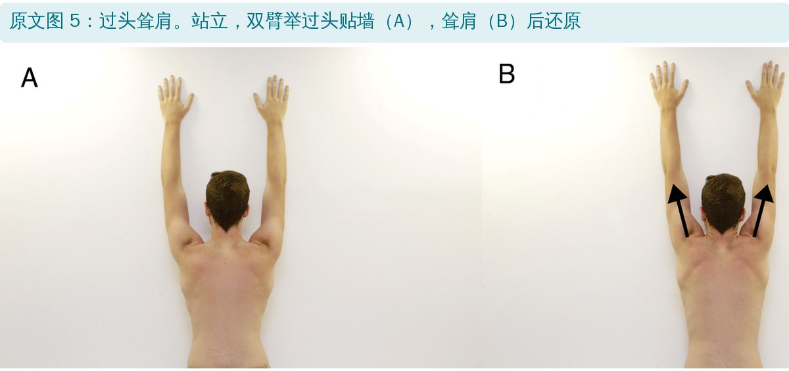
🔖原文图 5：过头耸肩
增强上斜方肌会增加肩胛前倾、压缩肩峰下间隙，对多数肩痛、尤其有撞击症状的患者可能适得其反。只有明显上斜方肌无力、肩带下垂或前伸的患者才适合耸肩类训练。
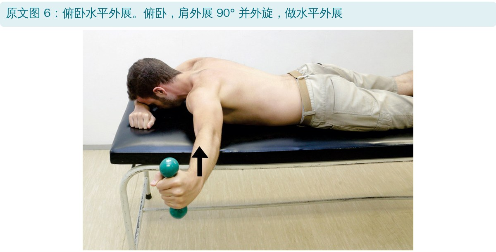
🔖原文图 6：俯卧水平外展
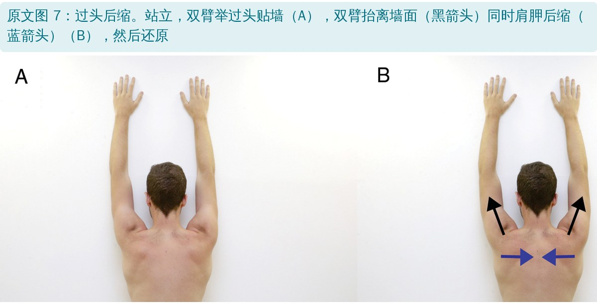
🔖原文图 7：过头后缩
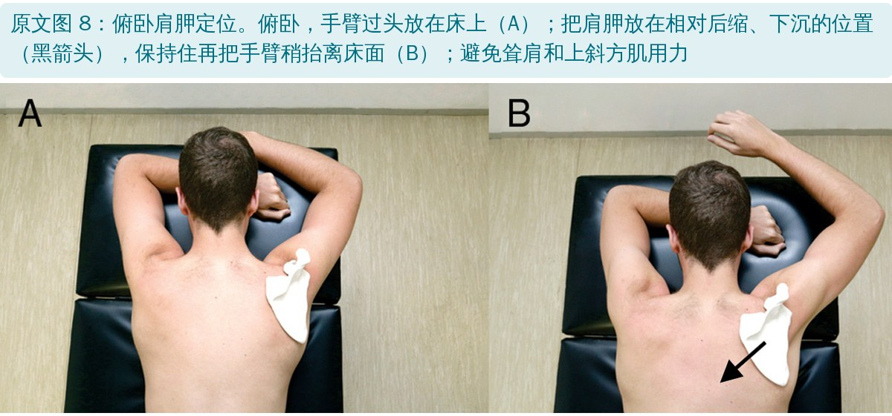
🔖原文图 8：俯卧肩胛定位
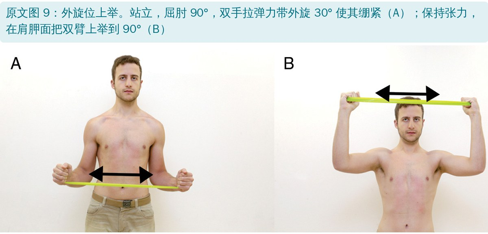
🔖原文图 9：外旋位上举
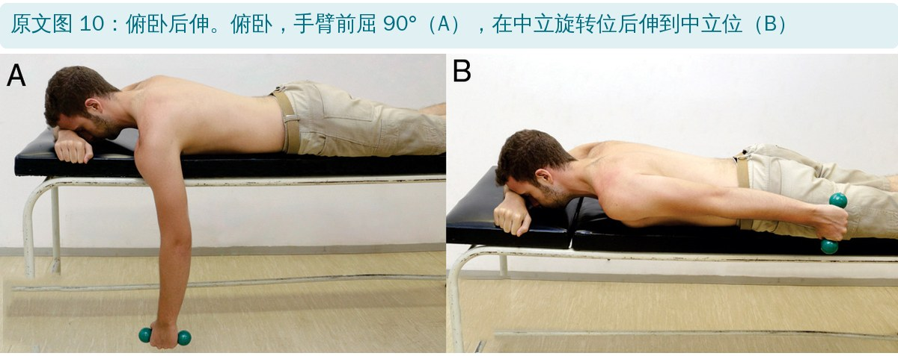
🔖原文图 10：俯卧后伸
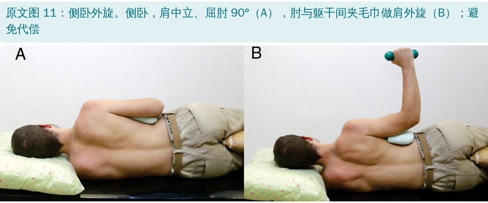
🔖原文图 11：侧卧外旋
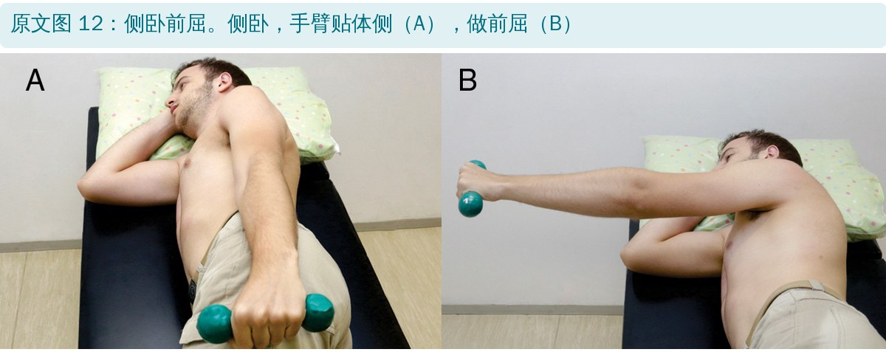
🔖原文图 12：侧卧前屈
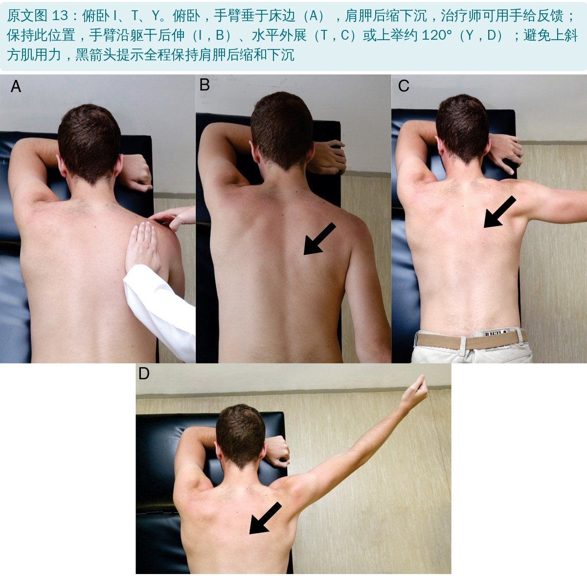
🔖原文图 13：俯卧 I、T、Y
• 共同要点：先把肩胛摆在后缩、下沉的位置，再动手臂，全程避免耸肩
• 俯卧 I、T、Y 可由治疗师用手给反馈，依次做后伸（I）、水平外展（T）、上举约 120°（Y）
• 外旋位上举用弹力带保持 30° 外旋张力，肩胛面上举到 90°
• 叙述性综述：功能分析多来自教科书模型和尸体、生物力学研究，属于理论
• 表 1 只列名称，没有肌电数值：说是“循证动作”，但没给出各动作的激活程度或上 / 下斜方肌比值，读者无法比较
• “针对性训练能减轻肩痛”缺直接证据：文中承认运动障碍与肩痛的因果关系不明
• 徒手肌力测试主要用于判断明显无力，对“控制和时机”问题不敏感
• 与第 1 部分说法不一：第 1 部分讲翼状肩胛时说上回旋力偶由前锯肌和上、下斜方肌组成；本篇却说上斜方肌对上回旋的作用“次要而间接”，主要上回旋肌是下斜方肌和前锯肌
• 上斜方肌的作用前后矛盾：功能部分说上斜方肌对肩胛外旋贡献大、单独瘫痪会导致过度内旋；训练部分又说它“自然会使肩胛前倾”，而没提外旋，读者不清楚它到底是保护还是风险
• “锁骨上提贡献 75% 前倾”的表述：引用 Teece 的数据说锁骨上提贡献肩胛前倾的 75%，但上举时肩胛整体是后倾的，正文没有解释这一点
• 测试证据引用不当：说测试位置能产生最大肌电活动，引用的是一篇讲肌电归一化方法的研究
• 参考文献错误：文献 32 页码“2184-2193”有误；文献 31 作者 Castelein 重复列了两次；文献 25 中“subacromial”拼成“subcromial”
• 小错：“described the upper trapezius has part of”应为 as；“Patients presenting either with...”缺少 or 的后半句
• 先分型再选动作：内侧缘翘 → 中斜方肌；前倾 / 内旋 / 上回旋不足 → 下斜方肌；肩带下垂 → 才考虑上斜方肌
• 多数肩痛患者别练耸肩，上斜方肌往往已经过度用力
• 先摆好肩胛再抬手：后缩、下沉，治疗师用手给触觉反馈
• 低负荷、多重复、重质量：目标是改善耐力和激活时机，而不是肌肉肥大
• 与前锯肌一起练：斜方肌稳定、前锯肌推动，两者缺一不可（见第 1 部分）
欢迎关注悦美力公众号，获取更多物理治疗的专业知识！
📄参考文献：
Camargo PR, Neumann DA. Kinesiologic considerations for targeting activation of scapulothoracic muscles – part 2: trapezius. Braz J Phys Ther. 2019;23(6):467-475. doi:10.1016/j.bjpt.2019.01.011
原文版权：© 2019 巴西物理治疗研究与研究生协会，Elsevier 出版，保留所有权利；图 1 经许可转载自 Neumann《肌肉骨骼系统运动学》第 3 版（Elsevier 2017）。本文为学术交流用的中文解读：图 1、2 英文标注改为中文，图 3～13 照片直接引用，表 1 为中文翻译。版权归原作者与期刊，如有侵权请联系删除。